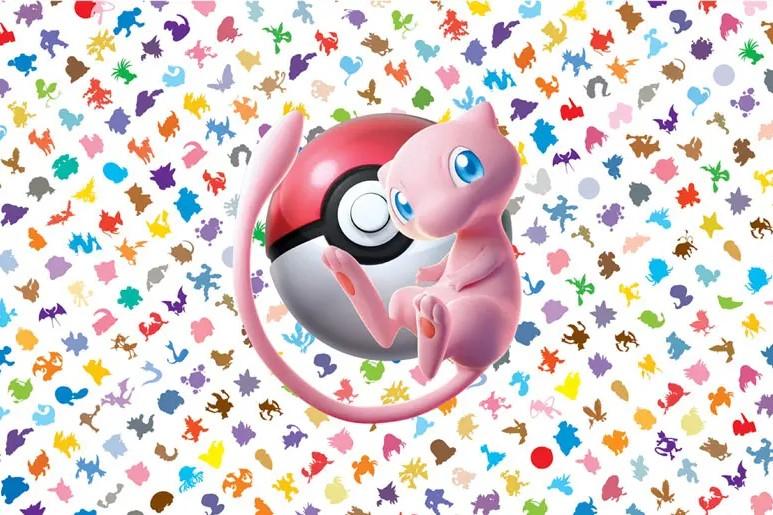
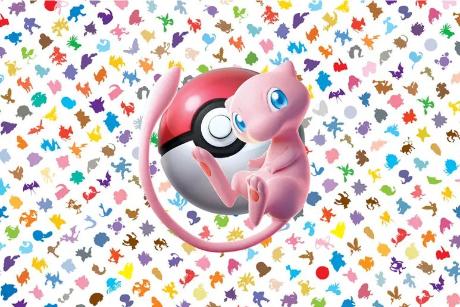

Profile
長田 楓
奨学金きついっす。
生年月日
2005/10/29
学校名
東京デザインテクノロジーセンター専門学校
学年／専攻
1年/スーパーITエンジニア専攻
ニックネーム
ONE
出身地
東京
長所
出席率100％
短所
性格が悪い
Favorite
好きなゲーム
ポケモン
好きなポケモン
グレイシア
好きなもちもの
とつげきチョッキ
好きなわざ
フリーズドライ
好きなタイトル
ポケットモンスター X・Y
好きなBGM
決戦！N
好きなアニメOP
XY&Z
長田 楓
奨学金きついっす。
2005/10/29
東京デザインテクノロジーセンター専門学校
1年/スーパーITエンジニア専攻
ONE
東京
出席率100％
性格が悪い
ポケモン
グレイシア
とつげきチョッキ
フリーズドライ
ポケットモンスター X・Y
決戦！N
XY&Z